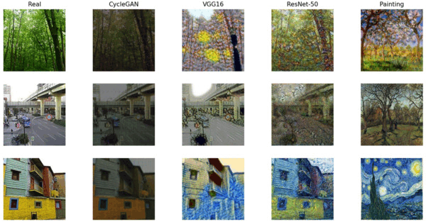

Ayesha binthe mostofa, BUET-CSE-UGradCSE BUET
undergard academic life and during term-breaks.
Table of Content

It is just a glimpse of academic terms projects that I have done in my academic life. Details of the projects can be found in the respective course writing.
L4/T2
CSE 472
: Machine Learning SessionalMatrix Transformation, Eigen Decomposition & Image Reconstruction using SVD
Term Project
Additional Work
Vehicle Object Detection in BangladeshCSE 412 : Simulation & Modeling Sessional CSE 400 : Project
& ThesisTopic Name : Advancing Automatic Code Review and Code Refinement Generation Using Large Language Models Field : Machine Learning, Natural Language Processing, Software Engineering
L4/T1
CSE 406 :
Computer Security SessionalCryptosystem (AES, RSA, Diffie-hellman & TCP-Socket implementation
Term Project
CSE 408
: Software Development SessionalTerm Project
CSE 410 :
Computer Graphics Sessional L3/T2
CSE 314
: Operating System SessionalShell ScriptInter Process Communication
Xv6
CSE 318
: Artificial-Intelligence Sessionaln Puzzle (A* heuristic)Latin Square (Value Ordering)Exam Scheduling (Local Search)MineSweeper (Inference)CSE 322 :
Computer Networks SessionalWireshark
Term Project
CUBIC-FIT: A High Performance and TCP CUBIC Friendly Congestion Control AlgorithmTCP Cubic-Fit Modification in ns2CSE 326
: Information System Design Sessional L3/T1
CSE 306
: Computer Architecture SessionalCSE 308
: Software Engineering SessionalQues Folder : Contains all the questions of the offline assignments
CSE 310 :
Compiler SessionalCSE 316
: Microprocessors,Microcontrollers and Embedded Systems
SessionalAssembly 8086
Atmega32 Microcontroller
Term Project
CSE 300
: Technical Writing and PresentationTable, Tikz, EqnBeamerReport Writing : Planar Graph
L2/T2
CSE 208
: Data Structures and Algorithms II SessionalCSE 216 :
Database SessionalERD DiagramBasic SQLAdvanced SQLPL SQLTerm Project
L2/T1
CSE 204
: Data Structures and Algorithms I SessionalCSE 206
: Digital Logic Design SessionalCSE 218 :
Numerical Methods L1/T2
CSE 108
: Object Oriented Programming Language SessionalC++
Java & Jave Fx
L1/T1
CSE 102
: Structured Programming LanguageiGraphics
Term Project